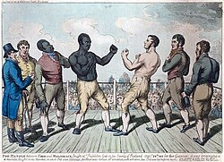
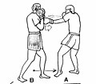
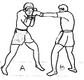
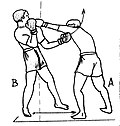
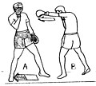
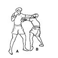
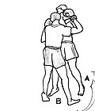

Boks
Boks, pięściarstwo – sport walki, w którym dwóch zawodników walczy ze sobą jedynie przy użyciu pięści, pierwotnie bez rękawic, a od początku XX w. już w rękawicach.

- Historia
- Walka na pięści jest jednym z najstarszych sportów, znanym już w starożytnej Grecji i w Cesarstwie Rzymskim[1]. Znajdował się on w programie antycznych igrzysk olimpijskich. Statyczne bijatyki dwóch zawodników były bardzo brutalne i czasem kończyły się śmiercią. Walki te, toczone z minimalną ilością reguł, niewiele miały wspólnego z boksem – sportem, jaki narodził się w 1719 roku w Anglii. Wówczas to James Figg, uznawany za pierwszego w historii mistrza Anglii, założył przy Tottenham Court Road w Londynie akademię boksu. Walczący nie nosili rękawic i zadawali ciosy aż któryś z nich został znokautowany lub opadł z sił[2]. Jack Broughton, który w 1730 roku zastąpił Figga, przez 18 lat zachował mistrzowski tytuł i jako pierwszy skodyfikował podstawy zasad tego sportu. Wstrząśnięty śmiercią na ringu jednego ze swych przeciwników, George’a Stevensona, sformułował i wprowadził w życie zbiór zasad znany jako Broughton’s Rules, które w I połowie XIX wieku zostały zastąpione przez London Prize Ring Rules.
- Boks amatorski
- Jako sport amatorski boks pojawił się w programie nowożytnych igrzysk olimpijskich już w 1904 roku, podczas igrzysk w Saint Louis, a nieobecny był tylko raz, w roku 1912 (ze względu na zakaz uprawiania tego sportu w Szwecji). Wielu zawodowych mistrzów świata wagi ciężkiej było wcześniej mistrzami olimpijskimi – między innymi Muhammad Ali, Joe Frazier, George Foreman, bracia Michael i Leon Spinks, Lennox Lewis i Wołodymyr Kłyczko. W 1946 roku powstało Międzynarodowe Stowarzyszenie Boksu Amatorskiego (AIBA). Obecnie liczy ono ponad 190 członków (tj. krajowych związków bokserskich). Od 1974 roku pod jego egidą organizowane są amatorskie mistrzostwa świata. Sankcjonowane przez AIBA walki od 2009 roku trwają trzy rundy po trzy minuty (mężczyźni), cztery rundy po dwie minuty (kobiety) albo trzy rundy po dwie minuty (juniorzy). W przeciwieństwie do zawodowców, amatorzy, w zawodach innych niż międzynarodowe, mogą nosić ochraniacze głowy (kaski). Odmienny niż w boksie zawodowym jest również system punktacji (punkty przyznawane są na bieżąco przez sędziów za każdy celny cios).
- Pozycje bronne
-
- Odskok – element techniki stosowany w obronie, w którym bokser wychodzi poza zasięg ciosów przeciwnika przez odbicie z obu nóg. Odskok jest skuteczną obroną bierną przed każdym rodzajem ciosów.
- Odchylenie – element techniki stosowany w obronie polegający na cofnięciu tułowia poza zasięg ciosów przeciwnika, przy czym nogi i biodra ustawione w pozycji bokserskiej pozostają nieruchome, odchylenie stosowane jest w obronie przed ciosami prostymi na górę oraz ciosami sierpowymi.
- Garda – element techniki stosowany w walce bokserskiej jako obrona bierna; polega na takim ustawieniu rękawic i przedramion, by chroniły boksera przed ciosami przeciwnika.
- Zakrok – cofnięcie nogi w celu uniknięcia ciosu i następnie wyprowadzenia kontry






Ćiekawostki
Gruszka bokserska – potocznie nazywana również kukurydziakiem, jest to worek skórzany przypominający kształtem gruszkę o średnicy około 25 cm i wysokości 35 cm, wypełniony grochem, kukurydzą, ścinkami szmat lub kawałkami gumy, przymocowany linką do sufitu, stosowany w treningu bokserskim do ćwiczenia ciosów zadawanych na głowę przeciwnika.